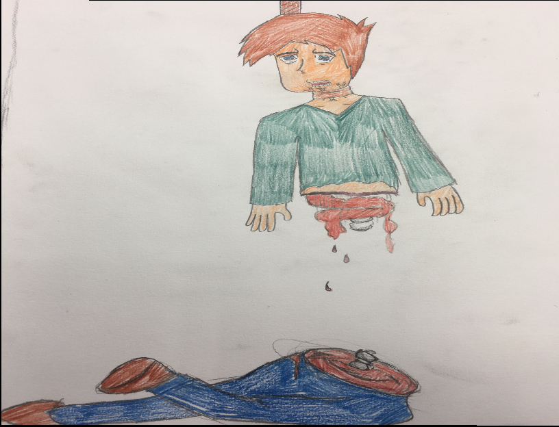

A murder took place in a famous writers home, one of the best detective Brian Sholtz is taking the case. To catch the killer, his strategy is to live in the house were the murder took place. Does he find something hidden inside the house, or is there something else lurking inside of Gravin Town.
I really wanted this to work, but when I tried to work on it more, the files got corrupted and I never recovered the files after that. Even if I really wanted to make this game, I never made this a reality.
Which was really sad, because it had alot of potential, so maybe I will work on a remake that will be better then the original demo version.
But while developing this game, I accidently made the beginning news flash scene a bit loud when I putted in the game, after I was trying the game out I jumped off my seat because it was to loud, so I had to turn it down a bit to not scare myself while playing.
I even made art of a death inside of the game, it is kind of gruesome and alot of gore, but here it is:

My drawings aren't the greatest, but I think atleast this one is good to be honest.